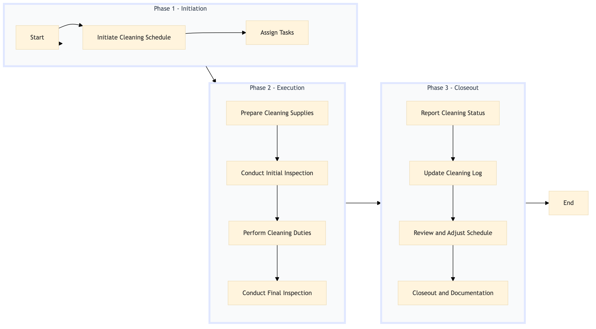

| Role | Steps |
|---|---|
| Executive Housekeeper | 1.1 3.3 |
| Housekeeping Supervisor | 1.2 3.1 3.2 |
| Housekeeping Staff | 2.1 2.2 2.3 2.4 |
| Step | Name | Role | System | Input | Output | KPI | Dec? | Exc? | Pain Point / Risk |
|---|---|---|---|---|---|---|---|---|---|
| 1.1 | Initiate Cleaning Schedule | Executive Housekeeper | Oracle OPERA Cloud | Cleaning schedule template | Updated cleaning schedule for the day | Less than 5 minutes | N | Y | Incorrect scheduling leading to missed cleaning duties. |
| 1.2 | Assign Tasks | Housekeeping Supervisor | Oracle OPERA Cloud | Updated cleaning schedule | Task assignments for housekeeping staff | Less than 3 minutes | N | Y | Overlooking specific areas or tasks in the assignment process. |
| 2.1 | Prepare Cleaning Supplies | Housekeeping Staff | Birchstreet Procurement | Cleaning supply inventory list | Supplies checklist with quantities | Less than 2 minutes | N | Y | Running out of necessary supplies during cleaning. |
| 2.2 | Conduct Initial Inspection | Housekeeping Staff | Oracle OPERA Cloud | Corridor and elevator inspection checklist | Inspection report with findings | Less than 5 minutes | Y | N | Overlooking critical issues that need immediate attention. |
| 2.3 | Perform Cleaning Duties | Housekeeping Staff | Oracle OPERA Cloud | Cleaning schedule and supplies checklist | Cleaned corridors and elevators | Less than 15 minutes per area | N | Y | Inadequate cleaning leading to guest complaints. |
| 2.4 | Conduct Final Inspection | Housekeeping Staff | Oracle OPERA Cloud | Inspection checklist | Final inspection report with any issues | Less than 5 minutes | Y | N | Neglecting to address minor issues that could escalate. |
| 3.1 | Report Cleaning Status | Housekeeping Supervisor | Oracle OPERA Cloud | Final inspection reports | Cleaning status report for property management | Less than 5 minutes | N | Y | Incorrect reporting leading to unresolved issues. |
| 3.2 | Update Cleaning Log | Housekeeping Supervisor | Oracle OPERA Cloud | Cleaning status report | Updated cleaning log in Oracle OPERA Cloud | Less than 2 minutes | N | Y | Omitting critical information from the log. |
| 3.3 | Review and Adjust Schedule | Executive Housekeeper | Oracle OPERA Cloud | Cleaning log and status report | Adjusted cleaning schedule for the next day | Less than 10 minutes | Y | N | Failing to adapt to changing needs or issues. |
| 3.4 | Closeout and Documentation | Housekeeping Supervisor | Oracle OPERA Cloud | All reports and logs | Completed documentation for the day | Less than 5 minutes | N | Y | Incomplete or inaccurate documentation. |
The Corridor & Elevator Cleaning process ensures that public areas of a Marriott full-service hotel are clean, safe, and presentable to guests. This includes daily cleaning of corridors and elevators, maintenance checks, and reporting.